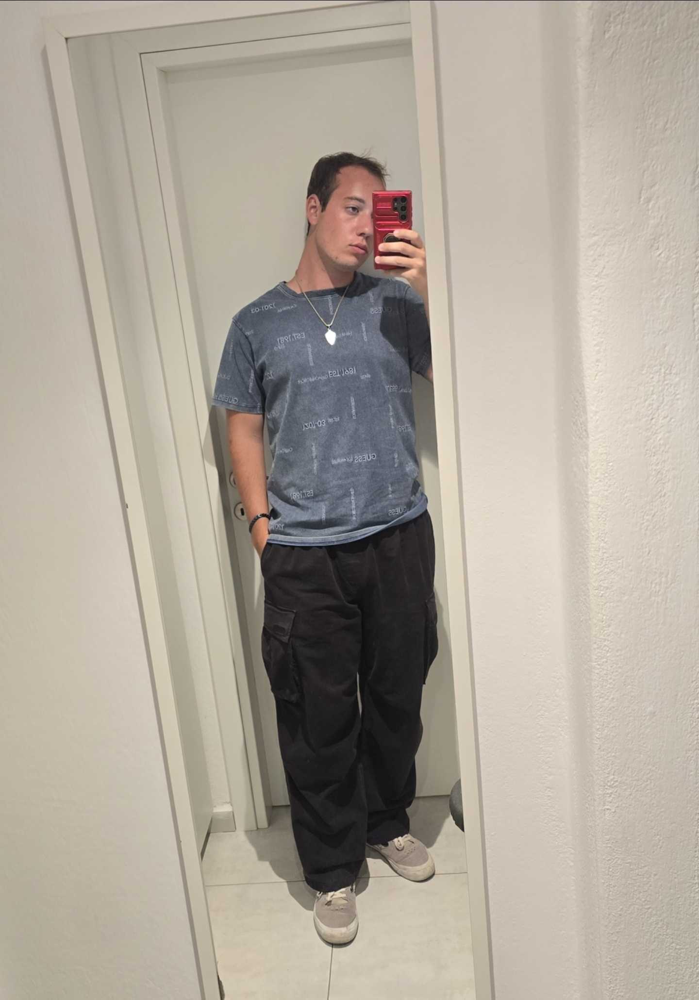

Grishma Howale
Security Enthusiast

Hi! I’m a Computer Science major with a Cybersecurity concentration. I’m passionate about secure software,
teamwork, and tech that makes a difference. I lead Team 404 Infinite Code as the Scrum Master and enjoy working on creative and collaborative projects.
Outside of academics, I love dancing and reading books.
Visit my GitHub profile where I love to code and collaborate!
.
Jane Smith
Backend Developer
Jane is a backend developer specializing in server-side logic and database management.
Carter Meadows
Software Developer
Hey! My name is Carter Meadows. I am a software developer from UNC Charlotte. My passion for computers started when I was a child and built my first computer. Ever since then, I have messed with the creative side of software, such as modding video games and more recently making video games.
A recent development project of mine has been a horror style Oregon Trail based video game that my friends and I have been creating over the past few months. This has been a low stakes passion project for us and has helped all of us grow a lot as developers.
Ivan Ivanov
Software Developer

Hello! My name is Ivan Ivanov, and I am a skilled developer with experience and passion for the world of
software development. I am a first generation american bulgarian, and my goal is to be able to work around the world and meet new people!
I really enjoy programming, ever since I started following along on YouTube. I enjoy playing video games, so I used Game Maker to create platformers!Game Maker has made some very popular games, such as Undertale, Hotline Miami, Hyper Light Drifter, and many more!

I also created a personal website using HTML and CSS!
Click Here to see it!